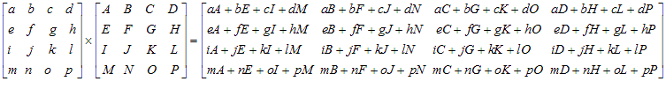
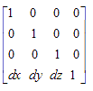
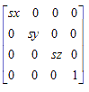
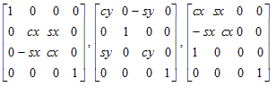
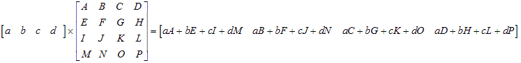

This lesson looks at some of the things you can do with the VUs by figuring out some maths. First up is matrix multiplication, a common task in the 3D world. We then apply that knowledge to rotation and scaling, and in the future we'll flesh this out to actually make a complete demo.
Matrix Multiplication
A lot of 3D graphics involves multiplying matrices. Commonly, 4x4 matrices are used which represent 3D homogeneous co-ordinates. That's convenient, because VU memory is mapped out in QWords with 4 fields. What an amazing coincidence :)
So, how would we go about multiplying 2 matrices together? For those of you uninitiated to matrices, a general matrix multiplication looks like this...

Note: Many thanks to all who sent in the matrix graphics! There were a lot of you... good to know I have many readers :)
So, to calculate a 4x4 matrix product, that's a whopping 64 multiplications and 48 additions! Good job that the VU can handle MADDing all four fields simultaneously then. Ever get the feeling that Sony designed the VUs to fit their purpose really, really well :)
Here then is a routine which will multiply 2 4x4 matrices together, and store the results in a fourth. Firstly, we'll load each matrix into 4 float registers, using some constants. Note: I don't think I told you this before, but GASP can perform calculations on constants for you. As you would expect, if kLeft has been assigned the value 0, then kLeft+1 would evaluate as 1.
This puts vf01 = (a, b, c, d), vf02 = (e, f, g, h).....vf05 = (A, B, C, D) etc.
Then, we calculate the first row of the result matrix. The first row needs 16 multiplications, and 12 additions. We know we can do 4 multiplications and additions in one instruction, so we should only need 4 instructions. Firstly, we notice that every element in the first row has a term with a as a factor (a being the x field of vf01). The 'a' terms are A, B, C and D, the 4 fields of the vf05 register. So, we need to multiply each field of vf05 by the x field of vf01. That is the purpose of the broadcast instruction.
mul acc, vf05, vf01[x]
Now we have the 'a' terms in the accumulator, we'll add on the 'b' terms. They come from a broadcast multiply of vf01[y] across vf06.
madd acc, vf06, vf01[y]
Then, we calculate the 'c' terms, and the 'd' terms. When calculating the 'd' terms though, we can now store the result into it's final destination, vf09, instead of the accumulator.
madd acc, vf07, vf01[z]
madd vf09, vf08, vf01[w]
And that's one row of the matrix done! The other 3 rows follow quite simply:
There, 64 multiplications and 48 additions done, as promised. All in 16 instructions. Then add 8 instructions for loading the matrices, and 4 for storing the results, and that only 28 instructions. In actual fact, VCL will rearrange a few of them and run some of the lq and sq instructions at the same time as the MULs and MADDs. Aren't the VUs great :)
You may want to skip to the end of the page and try the homework question now.
Rotation, Scaling, and Translation.
Bearing in mind that this is a VU microcoding tutorial, not a 3D tutorial per se, I just wanted to brush over how to implement a few transformations. Note that the matrices may be shown in a different sense to what you're used to. That's because, for the reasons outlined in Homework Question 1, it's easier to write the multiplication code the wrong way around (see note below), and transpose the matrix to suit.
Thus, to move a point (x, y, z, 1) to a point (x+dx, y+dy, z+dz, 1) we would use the matrix:

Similarly, we would scale an object by (sx, sy, sz, 1) with the matrix

And we would perform a rotation around an axis with

(where cx = cosine of the angle of rotation about the x-axis, sx is the sine of that angle, and so on.)
Of course, you could define the matrices the normal way, then write your own matrix transposition routine. Maybe that's your best route, as you could do the rotation, scaling and translation matrices in the normal order, multiply them together, and only transpose that result to make the vertex multiplication easier. It's all really up to you!
There is a useful file in the latest release of vcl called the Standard Macro Library. Just adding the line:
.include "vcl_sml.i"
to the top of your code, and putting that file in your coding directory, enables you to use all sorts of macros for operations on matrices, quaternions, vectors, vertices, even some simple macros for implementing a simple stack. Go take a look at them, they can help you out a lot when you're unsure how you should go about something like matrix multiplication (Where do you think I got the above code from?)
You may notice some slightly strange notation in the macros. If 'matrix' is actually vf12, then it seems that GASP is clever enough to know that matrix[1] should be vf13, matrix[2] should be vf14, and so on. That should help make the macro code a little easier to read.
One final thing, do the homework question before you look at the macro that does it for you, I want you to get used to using the microinstructions!
Homework
Take the matrix multiplication code above, and adapt it to multiply a 1x4 vector by a 4x4 matrix. You're after results like this:

Hint: 4 instructions should do for the actual multiply.
Note: I think it's more usual mathematically to multiply the other way round, i.e. to multiply a 4x4 matrix by a 4x1 column vector. However, I think it's easier and more efficient to write the multiplication code for the multiplication shown above. I believe that the mathematically correct way round is what you'll be used to if you have an OpenGL background, and the faster, 'wrong' way around will actually be correct to you if the have a D3D background. Each to their own.
I'll add some more homework questions to this lesson when I can think of a good direction to point you in.